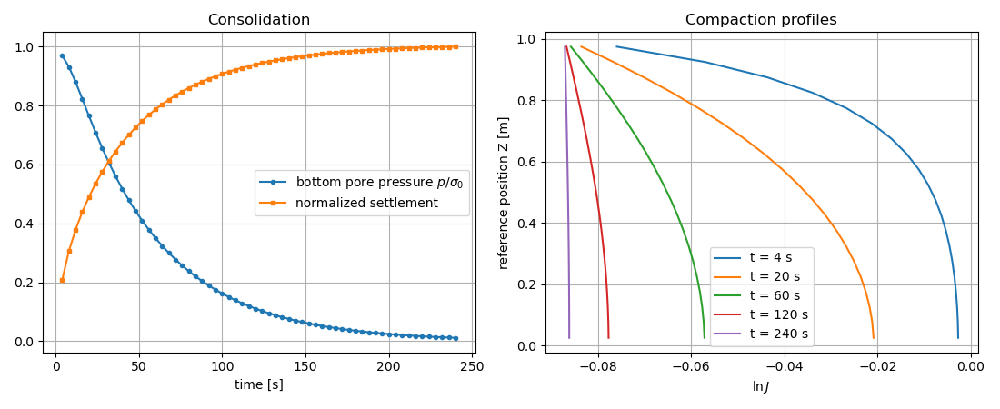

Note
Go to the end to download the full example code.
Finite strain consolidation of a hyperelastic porous column
A saturated column is loaded by a constant pressure on its drained top
face, under lateral confinement, and settles by about 8 %. The
skeleton is a compressible Neo-Hookean solid (simcoon NEOHC law) and the
permeability decreases with the volume change through the Holmes-Mow model,
as is typical for soft biological tissues such as articular cartilage.
The problem is solved in finite strain with the updated Lagrangian
formulation (nlgeom="UL", log_R corotational, the simcoon convention).
The volumetric strain of the Biot mass balance is then the logarithmic
volume change \(\varepsilon_v = \ln J\), and the permeability is
evaluated with the current \(J\) at each Gauss point.
When the load is applied, the fluid carries it and the column barely deforms. The fluid then drains through the top face: the compaction starts at the top and spreads down the column, while the permeability of the compacted material drops, which slows down the consolidation.
Note
This example requires simcoon. With simcoon hyperelastic laws, stay below about 12 % compression: see the Limitations section of Poromechanics.
import numpy as np
import matplotlib.pyplot as plt
import fedoo as fd
Parameters
L = 1.0 # column height [m]
sigma0 = 1.2e5 # applied surface load [Pa], about 8 % settlement
E, nu = 1.0e6, 0.3 # drained skeleton [Pa]
mu = E / (2.0 * (1.0 + nu)) # shear modulus
kappa = E / (3.0 * (1.0 - 2.0 * nu)) # bulk modulus
phi0 = 0.5 # initial porosity
k0 = 1.0e-8 # reference permeability (fluid viscosity = 1)
Mesh, constitutive laws and weak form
The permeability is given as a callable
HolmesMowPermeability, which receives
\(J\) from the weak form. The two-field
PoroMechanicsSimple formulation
(unknowns Disp and PorePressure) is used with nlgeom="UL".
nlgeom="TL" gives the same solution.
fd.ModelingSpace("3D")
mesh = fd.mesh.box_mesh(
nx=2,
ny=2,
nz=21,
x_min=0,
x_max=0.1,
y_min=0,
y_max=0.1,
z_min=0,
z_max=L,
elm_type="hex8",
)
skeleton = fd.constitutivelaw.Simcoon("NEOHC", np.array([mu, kappa]))
permeability = fd.constitutivelaw.HolmesMowPermeability(k0=k0, n0=1.0 - phi0)
fluid = fd.constitutivelaw.PoroFluidProperties(
permeability=permeability,
fluid_viscosity=1.0,
biot_coefficient=1.0,
biot_modulus=1.0e8,
initial_porosity=phi0,
)
wf = fd.weakform.PoroMechanicsSimple(skeleton, fluid, nlgeom="UL")
assembly = fd.Assembly.create(wf, mesh)
Boundary conditions
Lateral confinement, fixed and sealed bottom, drained top face. The load
is applied as a step: initial_pressure equal to the final pressure
removes the default ramp over the time step.
top = mesh.find_nodes("Z", L)
bottom = mesh.find_nodes("Z", 0.0)
side_x = np.unique(
np.concatenate([mesh.find_nodes("X", 0.0), mesh.find_nodes("X", 0.1)])
)
side_y = np.unique(
np.concatenate([mesh.find_nodes("Y", 0.0), mesh.find_nodes("Y", 0.1)])
)
dt = 4.0
nb_steps = 60
tmax = dt * nb_steps
load = fd.constraint.Pressure.from_nodes(mesh, top, sigma0, initial_pressure=sigma0)
pb = fd.problem.NonLinear(assembly + load)
pb.set_nr_criterion("Displacement", tol=1e-3, max_subiter=50)
pb.bc.add("Dirichlet", side_x, "DispX", 0.0)
pb.bc.add("Dirichlet", side_y, "DispY", 0.0)
pb.bc.add("Dirichlet", bottom, "DispZ", 0.0)
pb.bc.add("Dirichlet", top, "PorePressure", 0.0)
Dirichlet boundary condition:
var = 'PorePressure'
n_nodes = 4
value = 0.0
Time integration
lnJ is stored at Gauss points in the assembly state variables. Its
element average is recorded at a few instants, together with the pore
pressure at the sealed bottom and the settlement of the top face.
pb.initialize()
pb.tmax = tmax
pb.dtime = dt
pb.set_start()
z_elm = mesh.nodes[mesh.elements, 2].mean(axis=1) # reference position
order = np.argsort(z_elm)
snapshot_steps = [0, 4, 14, 29, 59]
p_bottom = np.zeros(nb_steps)
settlement = np.zeros(nb_steps)
lnJ_profiles = {}
for step in range(nb_steps):
pb.time = step * dt
convergence, nb_nr, res = pb.solve_time_increment()
if not convergence:
raise RuntimeError(f"Step {step}: Newton-Raphson failed (res={res:g})")
pb.set_start()
p_bottom[step] = np.mean(pb.get_dof_solution("PorePressure")[bottom])
settlement[step] = -np.mean(pb.get_dof_solution("DispZ")[top]) / L
if step in snapshot_steps:
lnJ_elm = assembly.convert_data(assembly.sv["lnJ"], "GaussPoint", "Element")
lnJ_profiles[step] = lnJ_elm[order]
Final state
Once drained, the compaction is uniform along the column and the Holmes-Mow permeability has dropped accordingly.
lnJ = assembly.sv["lnJ"]
print(f"final settlement: {100 * settlement[-1]:.2f} %")
print(f"lnJ at gauss points: [{lnJ.min():.5f}, {lnJ.max():.5f}]")
print(f"permeability ratio k/k0: {permeability(np.exp(lnJ)).mean() / k0:.3f}")
final settlement: 8.29 %
lnJ at gauss points: [-0.08708, -0.08615]
permeability ratio k/k0: 0.482
Pore pressure history and compaction profiles
t = (np.arange(nb_steps) + 1) * dt
fig, axes = plt.subplots(1, 2, figsize=(11, 4.5))
ax = axes[0]
ax.plot(t, p_bottom / sigma0, "o-", ms=3, label=r"bottom pore pressure $p / \sigma_0$")
ax.plot(t, settlement / settlement[-1], "s-", ms=3, label="normalized settlement")
ax.set_xlabel("time [s]")
ax.set_title("Consolidation")
ax.legend()
ax.grid(True)
ax = axes[1]
for step, profile in lnJ_profiles.items():
ax.plot(profile, z_elm[order], label=f"t = {t[step]:.0f} s")
ax.set_xlabel(r"$\ln J$")
ax.set_ylabel("reference position Z [m]")
ax.set_title("Compaction profiles")
ax.legend()
ax.grid(True)
fig.tight_layout()
plt.show()

Total running time of the script: (0 minutes 3.575 seconds)